Haven CS
Designed as a way for LGBTQIA+ youth to gain access to affirming environments
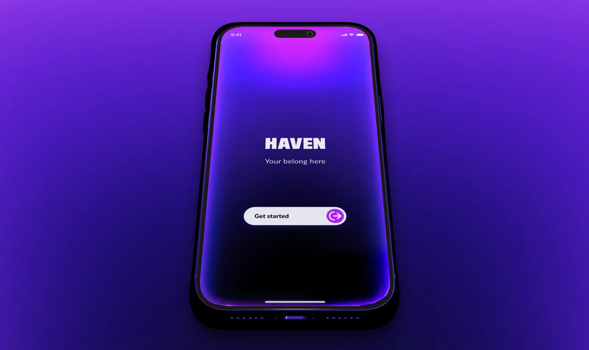
Background
This project was developed as part of a UX bootcamp. The brief was to create a functional product for a specific user group and include a way to connect users with an expert.
Identifying the problem
For many LGBTQIA+ teenagers, finding a sense of belonging and acceptance can be a difficult and isolating experience.
Access to affirming environments has a major positive effect on LGBTQIA+ teenagers’ mental health. These environments are often limited or difficult for them to access.
Demographic access
Minors need a guardian’s consent to join a study. Asking would out the teens who need Haven most, so I interviewed two proxy groups instead.
Subject matter experts3
3LGBTQIA+ college students
6Total interviews
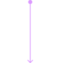
5 key insights
Insight 1
Humanizing experts
When choosing between experts they value elements that humanize them. Users want to know that experts will understand them.
Insight 2
Sensitive conversations
Users were uncomfortable discussing sensitive identity topics aloud, especially when someone nearby could overhear.
Insight 3
Unique identities
A one size fits all identity model could flatten the demographic differences that shape each user’s unique experience.
Insight 4
Scheduling concerns
Users need to choose a time when they could be alone. A time that they will feel safe to engage with an expert.
Insight 5
Personal security
Users are concerned with using an LGBTQIA+ product in case disapproving guardians or peers may find out.
Designing an MVP
Because of the complicated and sensitive nature of the subject matter, I broke this down as if I were designing it as an MVP.
I broke the design into two phases. This let me decide which features mattered most now and which could wait until after the MVP.
- Phase 1Identity
- Phase 2Community
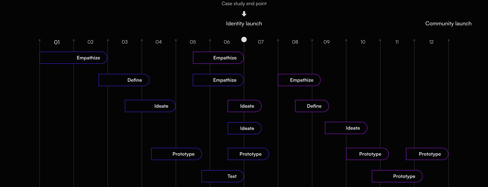
Phase 1, Identity01 to 07
- Empathize
- Define
- Ideate
- Prototype
- Test
- Empathize
- Ideate
- Prototype
Identity launch, where this case study ends
Phase 2, Community05 to 12
- Empathize
- Ideate
- Empathize
- Define
- Ideate
- Prototype
- Prototype
- Prototype
Community launch
Wireframes
With that all settled, it was time to start building the product. I started designing wireframes to test some of the concepts I had designed based on previous insights.
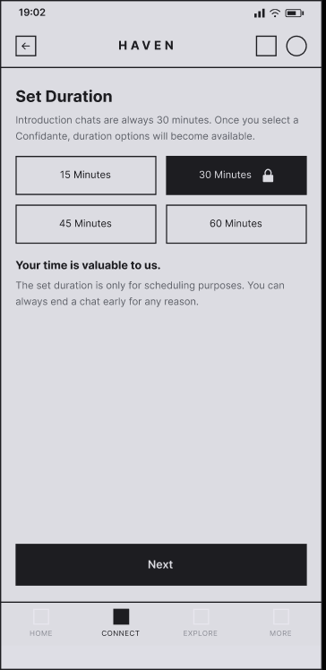
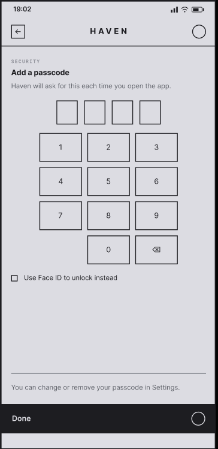
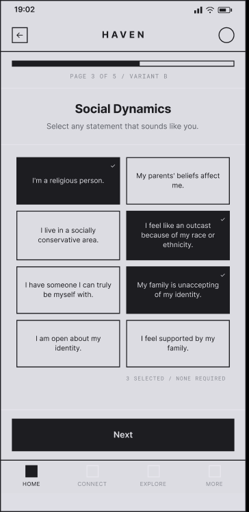
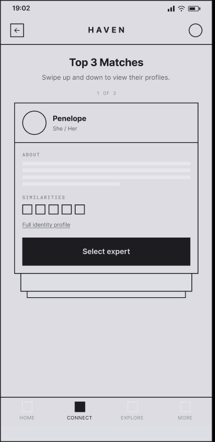
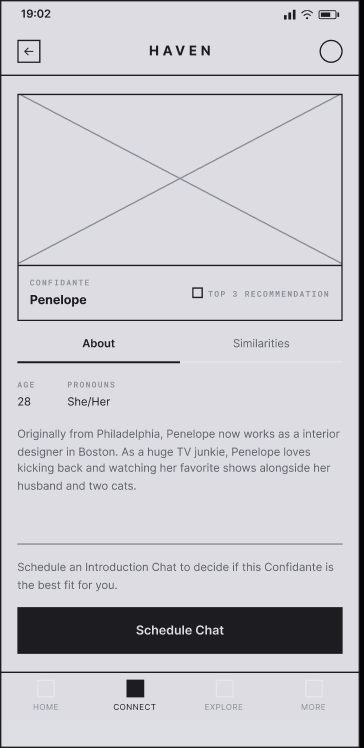
Usability testing
Six participants tested the key flows
- 01Complete Confidante match enrollment
- 02Select a Confidante
- 03Schedule a chat
Key insights from testing
Insight 1
Users were unsure of what mode of communication they would be chatting with the expert through.
Insight 2
Users had trouble understanding the duration section of the scheduling page.
Insight 3
Users were concerned that the design lacked enough security features.
Insight 4
Users wanted to know more about the Confidante in order to determine the right choice.
Based on that feedback and information I had already gathered from initial interviews, I built the following solutions.
The Confidante program
An expert program designed for flexibility, adapting to each user’s unique needs and comfort.
Confidantes support the user in two capacities:
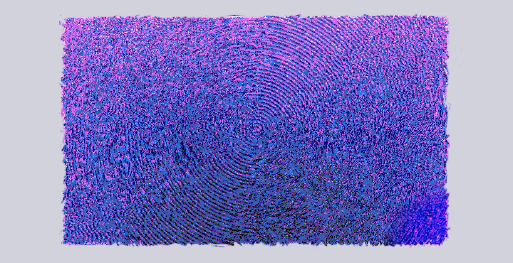
- 01A community liaison that connects the user to different people and communities.
- 02A source of support for users who need guidance or someone to talk to.
Primary identity quiz
Identity shapes what safe, relevant support looks like. The quiz makes room for the experiences behind each match.
- Interview insight 1
- Interview insight 3
- Confidante role 1
The quiz groups prompts into five areas: attraction, gender identity, race and ethnicity, belonging and upbringing. Users pick the experiences that matter to them. Confidantes then see a summary of the shared experiences behind each match, so they can tailor support and recommend communities that fit.
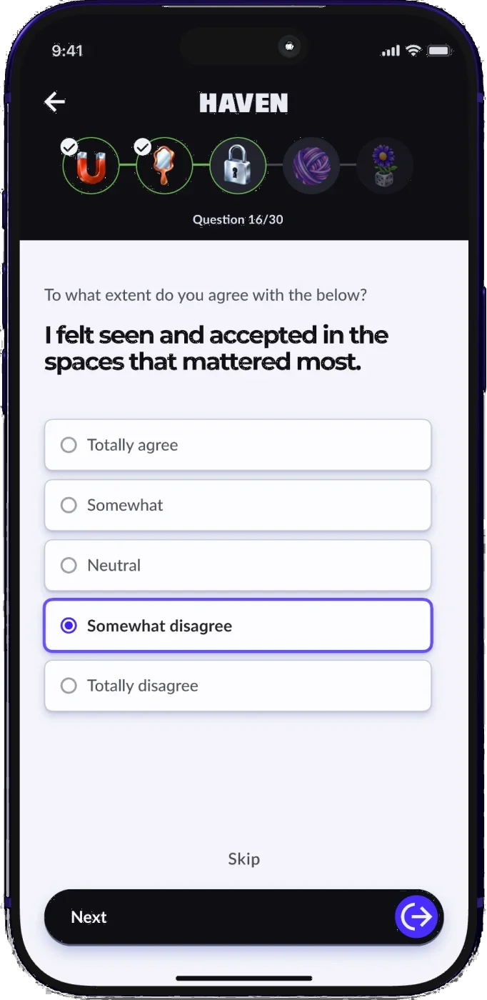
Testing synthesis
Haven’s early flow asked people to choose a Confidante before they could have an introductory chat.
- Interview insight 1
- Testing insight 4
Confidante selection journey flow
Testing showed users hesitating over which Confidante to pick. They went back and forth between profiles, and some undid their choice after making it. I moved selection after the introductory chat, which exists to help them decide. In the revised flow, people can chat with more than one Confidante before choosing one.
- Identity quiz
- Review matches
- Select a Confidante
- Intro chat
- Schedule a chat
Confidante profile
Users need to understand who the Confidante is before making a decision. They need to feel understood, represented and safe.
- Interview insight 1
- Interview insight 3
- Testing insight 4
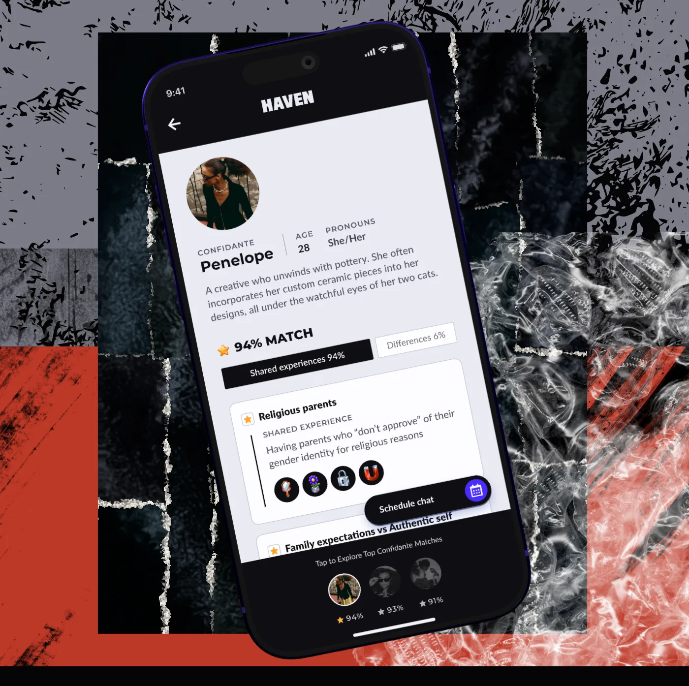
Shared experiences, differences and humanized bios help users compare Confidantes and decide whom to schedule a chat with. Testing showed that those details needed more prominence. I made shared experiences the focus of the page and replaced vertical swiping with suggested Confidantes along the bottom, so users could switch between profiles.
Scheduling a chat
People needed to know what to expect before booking an introductory chat.
Testing showed confusion about how chats would work. The scheduling screen explains that they happen by text, last 30 minutes and can end early, so people can choose a private time. With selection moved after the chats, users can book introductions with different Confidantes. Your events lists each upcoming chat with the Confidante’s name and time.
- Interview insight 4
- Testing insight 1
- Testing insight 2
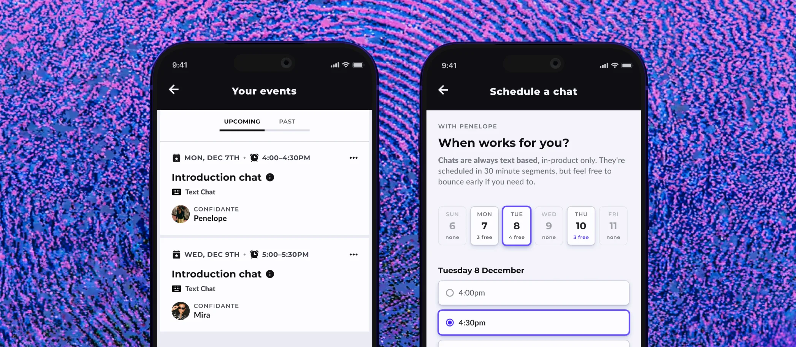
Chat-based interactions
When speaking out loud is not safe or private, the interaction itself has to lower the barrier to asking for support.
- Interview insight 2
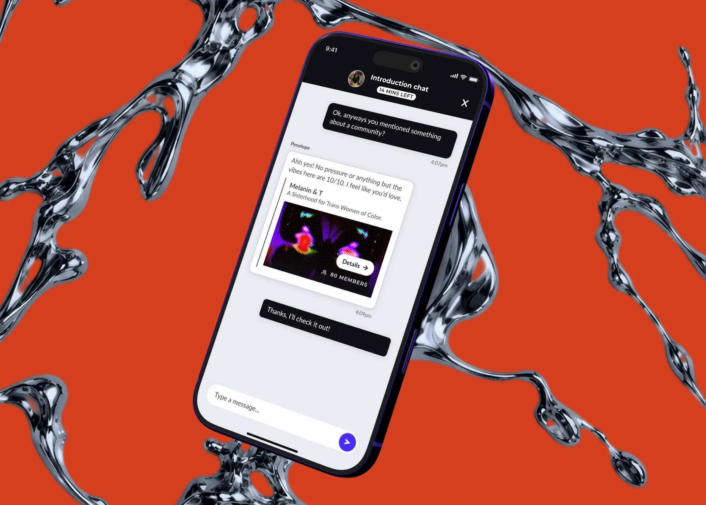
The final concept uses text-based sessions, not voice or video, so users can engage without speaking sensitive information aloud. A bounded chat format gives users more control over when and how much they share, responding directly to concerns about being overheard.
Security features
Privacy is a condition for access. Users need safeguards that protect the app before, during and after a conversation.
- Interview insight 5
- Testing insight 3
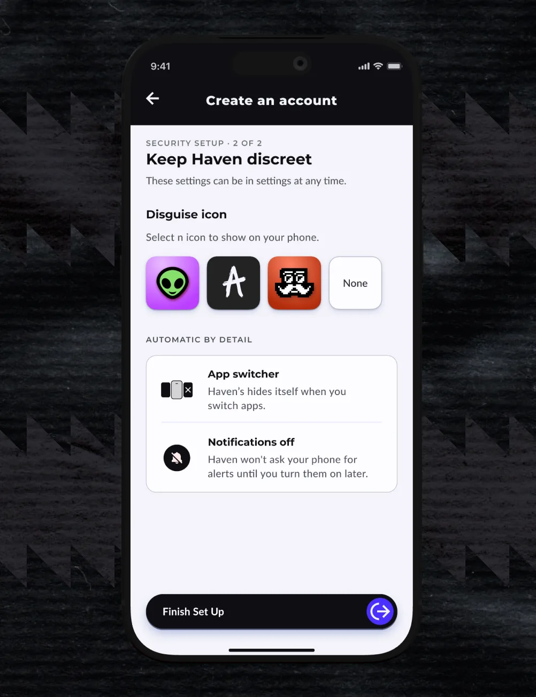
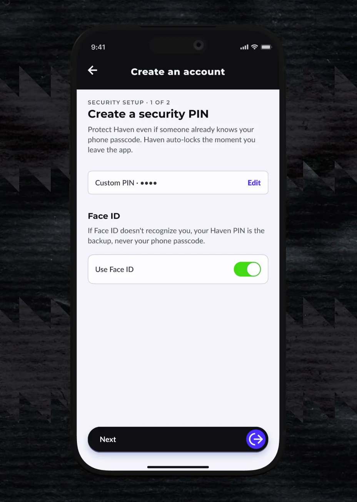
Interviews showed that discovery by guardians or peers could stop someone from using Haven at all, and testing showed the early concepts did not communicate enough protection. The final setup disguises the app icon, hides Haven in the app switcher, keeps notifications off until the user turns them on and adds a security PIN with Face ID. Privacy is visible when users need it, not buried in a later settings screen.